在华与华，有三句话一直贯穿在我们工作的始终：没有创意，策略等于零；没有手艺，创意等于零；没有执行，一切等于零。要下苦功，做细活！从 2019 年开始，华与华与东鹏饮料携手合作 7 年，这段合作正是对这三句话最有力的印证。作为华与华在快消品行业最具标杆性的案例之一，东鹏项目在这 7 年中交出了一份扎实的成绩单：助力东鹏特饮登顶中国功能饮料第一品牌宝座；依托对创意与手艺的持续深耕，相继推出东鹏大咖、东鹏补水啦等新品，助力东鹏构建起完善的产品矩阵；而东鹏补水啦上市第 3 年销售额已突破 32 亿元，更成为现象级明星产品。
这份成绩单背后，是华与华与东鹏饮料一起 7 年如一日的持续深耕：2019 年华与华为东鹏特饮创意超级画面，统领对外品牌传播工程，开发超级元媒体，实现产品全自动销售。
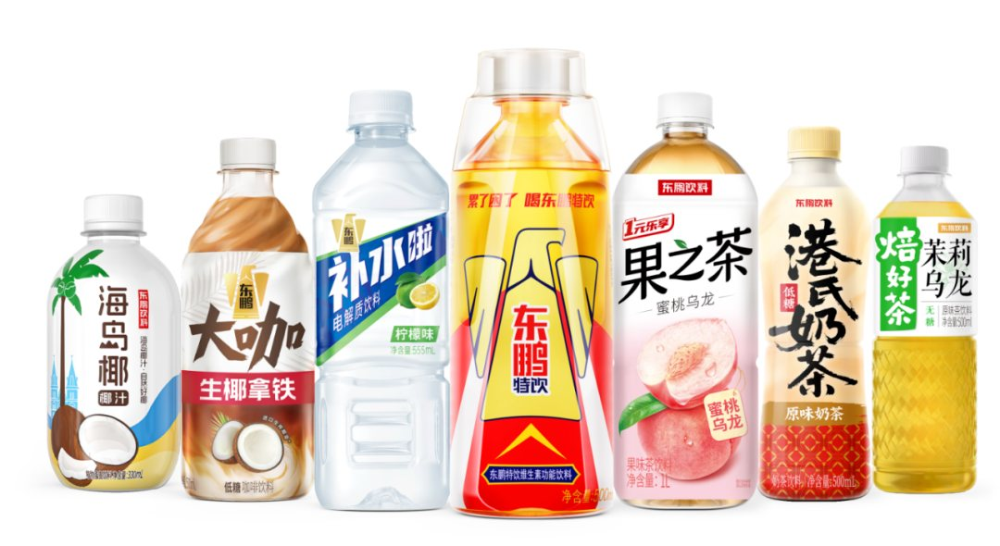
2020 年，创意超级醒脑广告，寄生《 Ole Ole 》文化母体，几何级放大品牌信号能量。
2021 年，创意“送东鹏 财运爆棚”品牌谚语，放大品牌戏剧性，助力东鹏切入礼品大市场。
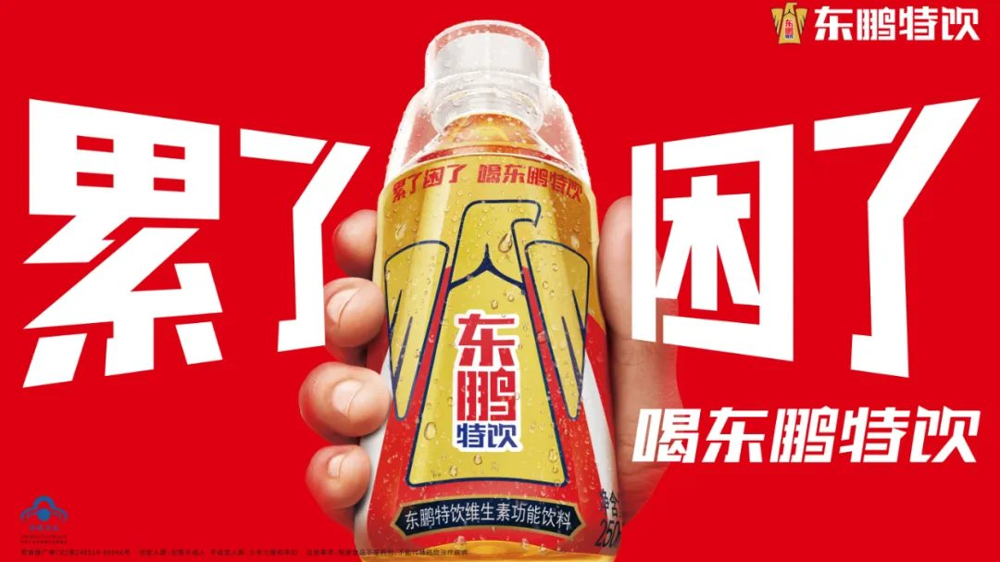
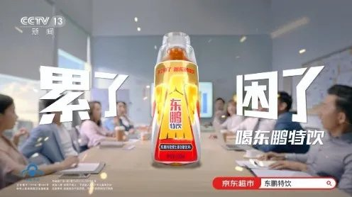
2022 - 2024 年，通过亚运会、奥运会等赛事营销工程，为东鹏成功构建“为国争光 东鹏能量”品牌资产，助力东鹏特饮实现跨越式增长。
本期文章，我们要给大家分享的，不是东鹏特饮，而是东鹏的第二支全新大单品——补水啦。在饮料行业竞争如此激烈的情况下，短短 3 年，我们通过产品开发、广告宣传和渠道开拓等，助力补水啦成为超 32 亿大单品，从 0 到 1 帮助东鹏开创品牌第二曲线。要知道，在饮料行业，即使是行业巨头，想要开启第二曲线也需要漫长的时间，而华与华在与东鹏合作的第 4 年，就成功拉出一条超 32 亿的第二曲线。· 2023 年，补水啦上市第一年，营收回款超 5 亿，在所有饮料新品中排名第 2 ；
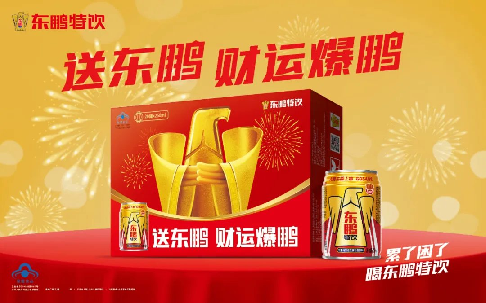
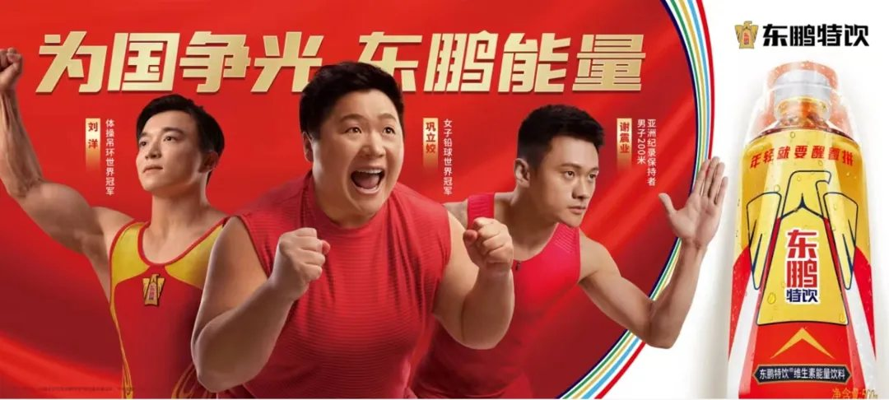
· 2024 年，补水啦营收接近 15 亿，同比增长 280 %，成为行业第 2 ；· 2025 年，补水啦营收 32 . 74 亿，登顶行业第一宝座。
无论从企业增长还是行业影响力看，补水啦都堪称一个奇迹案例。这个奇迹是如何实现的？答案藏在每一个魔鬼细节里。而所有的细节，都源自一个根本哲学——目的哲学。古希腊思想家亚里士多德说：“每一个事物都有一个第一性的概念，这就是目的性概念。”华板也常说：“做任何事要始终服务于最终目的，每一步都服务于最终目的。”
接下来，让我们看看华与华如何始终服务于最终目的，用魔鬼细节创造增长奇迹。
1包装的目的
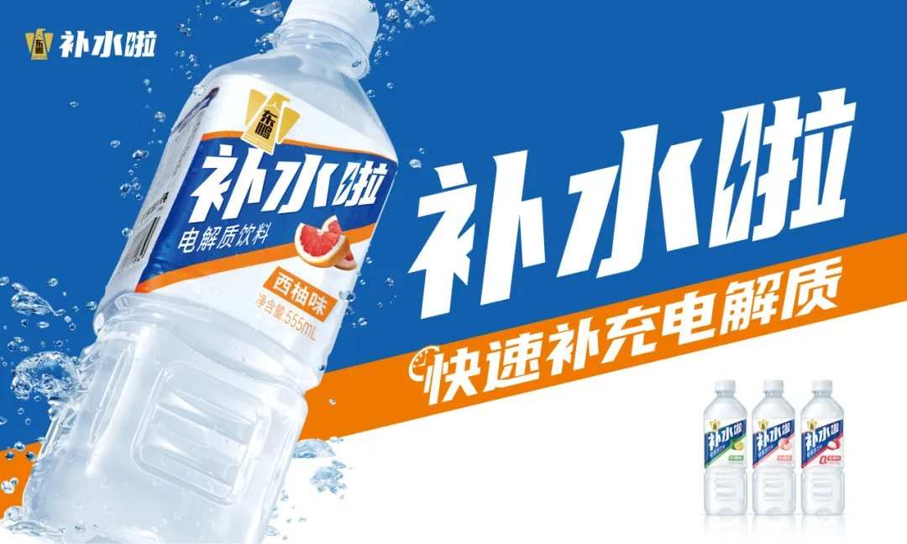
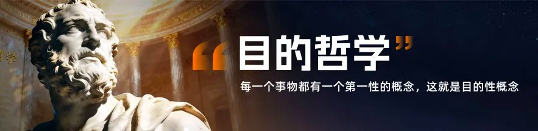
产品自己会说话 放上货架就卖货2022 年 12 月，我们接到东鹏副总裁蒋总的紧急课题：切入电解质赛道，林董已定名“补水啦”，月底上市。那一刻，我们既兴奋又倍感压力。兴奋的是，林董给了一个天才命名，这是为东鹏开创第二曲线的绝佳机会。但我们深知饮料推新的难度——成功率只有千分之一。去日本游学时，三得利前全球 CEO 斋藤和弘先生分享过：日本每年推出 3000 多个新品，大部分 3 个月后消失； 3 年后还留在货架上的，不到 3 个。而这样的竞争，在中国跟更激烈。这是在广州街头一家普通小店，门口有 9 个冰柜，共摆了 300 多瓶饮料。
大家想象一下，一个新品，没有广告、没有促销员，在放上货架前没人认识，就要和300 多瓶饮料进行生死竞争。饮料行业的推新，不是九死一生，而是 999 死一生的超级难题。如何破题？在快消品行业，决定成败有三个关键：第一是包装，第二是包装，第三还是包装！快消品的包装比什么都重要。三得利前 CEO 说：只有包装设计才能改变命运，如果我们哪个产品卖得不好，我们就改包装。在华与华，我们讲产品即信息，包装即媒体。一个好的包装，能第一眼被看到，第一眼被理解，能让产品自己会说话，放上货架就开卖。那如何围绕这个目的，设计一个能“必然被购买”的包装呢？让我们一起到店里去看：
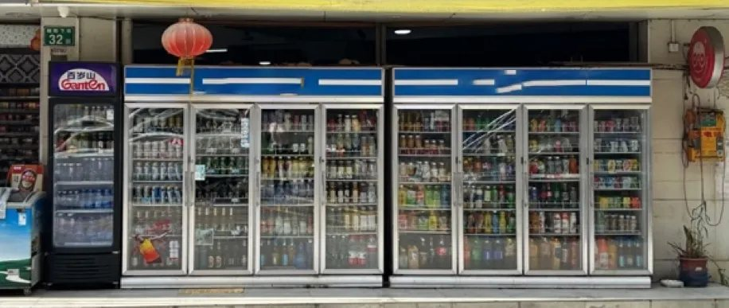
1 ）当你走向货架时，最先抓住你眼睛的是什么？产品名？广告语？都不是，而是颜色！用色如用兵。我们先用品类色蓝色，来放大电解质属性，然后呢，让充满活力的西柚橙，和补水蓝这么一撞，包装在货架上就跳出来了。
2 ）当你被颜色吸引，走到货架前，我们就要和你“对暗号”了。用倾斜透视排版法，把购买理由补水啦放到最大，让它像一声呐喊，从瓶身上冲出来，建立超级版式！这也为电解质饮料的品类名抢出了空间，让你瞬间理解购买理由。
3 ）然后我们把东鹏的 logo 在左上角能放多大放多大，和补水啦形成固定组合，一看就知道是东鹏的新品，建立信任背书。

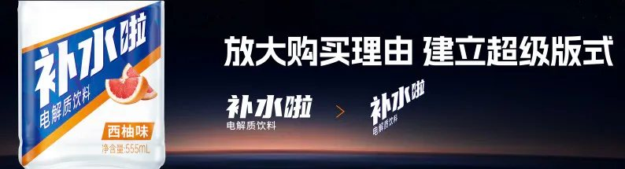
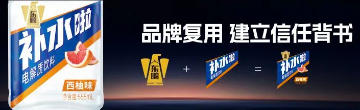
4 ）等你拿起包装，心里会好奇，为什么补水啦？怎么补水啦？这时，我们在侧面又给到了购买指令购买指南：天热就要补水啦、运动就要补水啦，让你一气呵成交，坐着滑滑梯，滑到收银机！
哪怕是一个运输包装，也是品牌的道场，我们把补水啦转运箱也设计成超级广告位，在终端建立强大的陈列效果！
包装好不好，关键在整理华与华一直践行丰田生产方式 5S 的技术，清扫、整理、整顿、清洁、素养，本质上就是排除浪费。其实包装设计的过程，也是一个 5S 排除浪费的过程。我们的目的，就是要让包装形成一个最高效的看板，所有内容、所有符号，都要服务于包装的最终目的—卖货。一个好的包装设计，胜过1亿广告费2023 年，补水啦上市不到半年，就爆发出惊人威力，这就是目的哲学的威力。这个包装，就是我们给东鹏请的“最强销售员”， 24 小时站岗，不吃不喝不拿底薪不要加班费，就站在货架上印钞票。
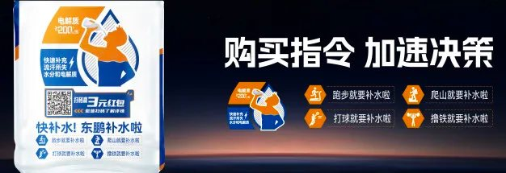
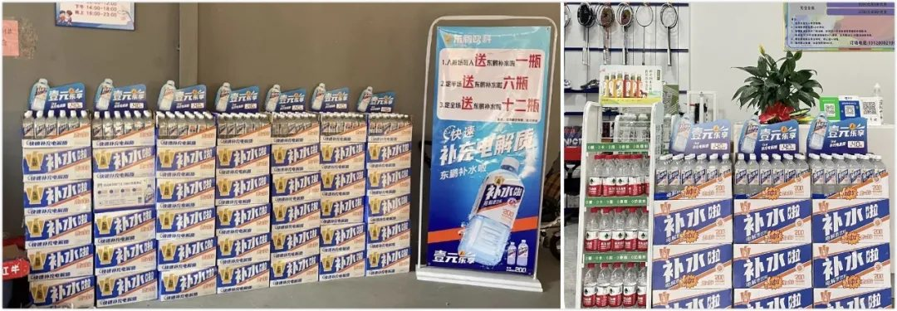
2广告的目的买我东西 传我美名货架上的胜利只是第一步。接下来要思考：如何用广告目的哲学突破行业围剿，抢占更大市场？补水啦成功后，我们受到前有狼后有虎的夹击。小厂疯狂抄袭，市面上“补水呀”“补水快”“快补水”层出不穷，开启低配版模仿秀。一些先发品牌也开始疯狂加注，试图抑制我们增长。在快消行业，速度就是生命。一旦错过窗口期，让竞品率先占领市场，之后花 5 倍 10 倍兵力也进不去了。如何快速抢占市场？关键在于三个字：广告战我们不仅要在货架上战胜对手，更要在传播阵地取得胜利。华与华的工作，就是发动广告战，抢夺市占率。有的企业说，花了很多钱投了很多广告，但没啥用～因为他们压根不知道广告的目的是什么。传播学大师麦克卢汉在《理解媒介》中说：“广告不是一种有意识的消费，而是一种无意识的药丸，要对受众发起无意识的猛攻。”这也是我们经常看到的“泰国神广告”不起作用的原因。
泰国神广告中，消费者光顾着看剧情、看笑话，反而把品牌及其淡化了！而那种满地打滚，硬生生往大脑里闯的洗脑广告，提高了消费者的心理防线，让他们根本就不愿意“看到”品牌。
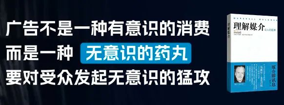
华与华一直是广告片的大玩家，早在 2010 年，《商业周刊》发布中国十大广告主， 4 个都是我们的客户，很多人都是看着华与华广告片长大的。我们认为，广告的目的从来都不是讲故事，而是耍把戏。是要让产品唱主角，让消费者买我产品，传我美名。那补水啦这台戏，要怎么唱，才能让消费者愿意买我产品，传我美名呢？
2023 年，随着广告片在全国的霸屏，补水啦从一个品牌名字，变成了很多人的口头禅。有网友就说：每次追剧正投入的时候，就让我补水啦，一天干 3 瓶，真是中了他的邪！还有人说：我这是得了什么广告后遗症吗？拿起水杯，脑子里就开始自动循环“补水啦补水啦 东鹏补水啦”这就是麦克卢汉所说的“无意识的药丸”生效了！为了能让消费者毫不费力地记住品牌，从脚本阶段，我们就要确保信号够足。1 ）文案上，在这 41 个字里，我们的品牌名补水啦整整出现 5 次，相当于平均每 3 秒，就在你的脑海里植入一颗“无意识的信号“。
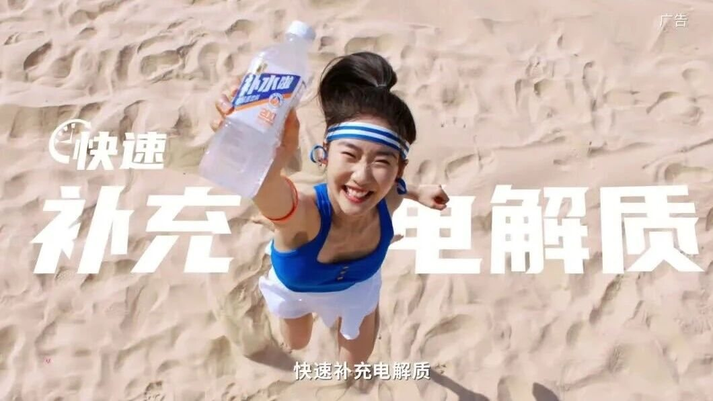
2024 年，补水啦在全国 44 个地铁站投放包站广告。
为什么选择地铁站？因为，这里是连接品牌和消费者的关键入口，它不仅是品牌流量阵地，更是销售起点。站内外的便利店、超市、自动贩卖机，都是我们的销售场景。我们的目的就是要在这做好销售拦截，让消费者看完广告，走出地铁，马上购买。
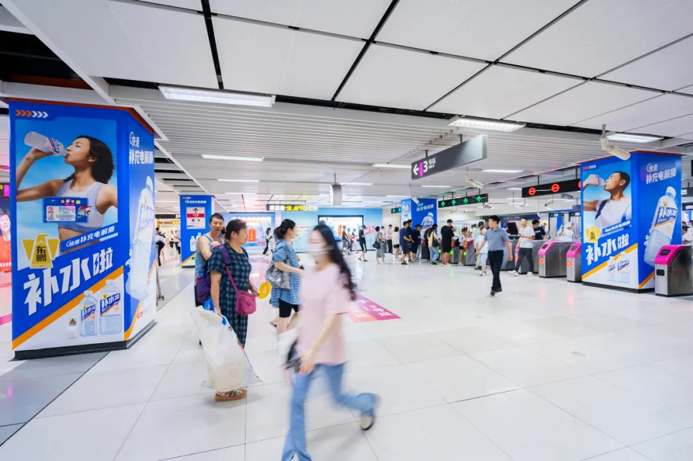
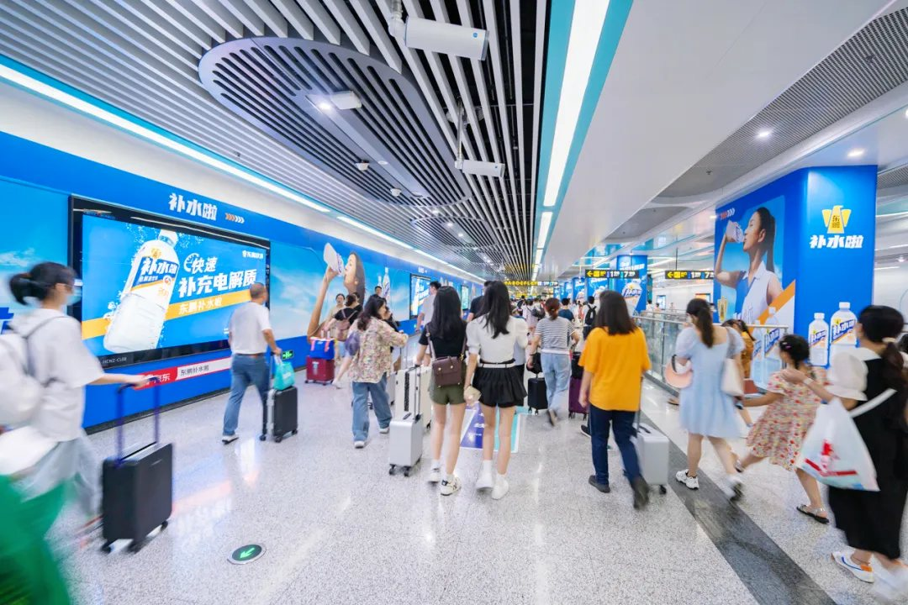
但问题来了：在这个寸土寸金的战场，如何让昂贵的“明星流量”，真正转化为扎实的“产品销量”呢？我们看到太多“被明星流量绑架”的案例：品牌花天价请明星代言，拍得很美很帅，广告出街了，却看不到品牌销售信息，变成了明星的大型写真。为什么？根本原因就是丧失了执行主导权！很多品牌总监都有这样的经历：明星就给一两个小时拍摄，围着一堆经纪人助理，你想让他动作夸张点，他说“不行，那是表情包”；你想让他把产品拿高点，他说“不行，挡着脸了”。怎么办？只能妥协。面对这种失控，如何夺回主导权？华与华有一个独门秘诀，其实就是三个字：笨功夫。首先，沟通前做 “预设计”。明星不配合，往往是怕你把他拍丑了。当年罗宾·威廉姆斯拒演《阿拉丁》，也是担心形象滑稽。迪士尼动画师直接做了一段配好音的样片给他，罗宾看完哈哈大笑，当场签约。这就是“预设计”的力量！我们也一样，你把做好的漂亮设计图给明星一亮：老师您看，多有张力！明星看了，心里有底，配合度瞬间拉满！
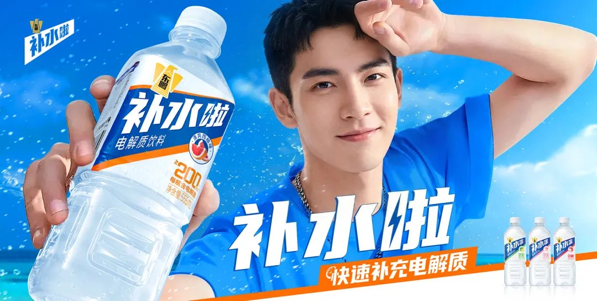
第二，拍摄前做“预拍摄”。开拍前，我们会找模特 1 : 1 预拍摄，甚至我们还自己直接上场，动作要怎么摆？汗珠要挂在哪？提前把所有动作全部彩排一遍。这样才能保证拍明星时，只要照着做，一遍就能过！
第三个笨功夫，拍摄中做“预排版”。我们最怕的，就是现场看着挺好，回去修图才发现姿势不对，总不能把明星叫回来重拍吧？所以，我们要求设计师必须带电脑到现场。不仅要盯监视器，还要预排版。快门一闪，立马排版，动作好不好？眼神对不对？现场直接看成片，有问题当场就改！要做好地铁包站广告，还要有第 4 个笨功夫：到现场做设计。我们要求设计师必须带着卷尺去地铁站，直观感受最真实的尺寸和视觉动线。
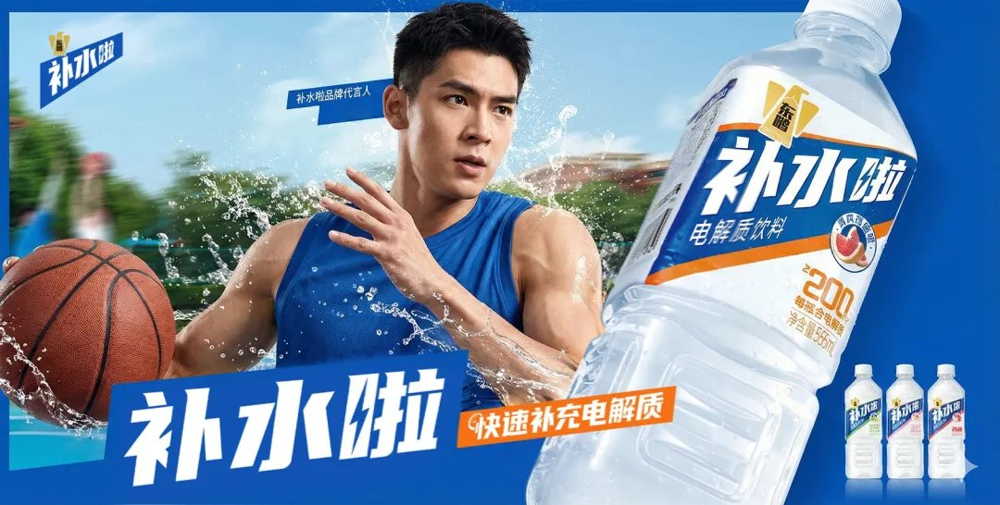
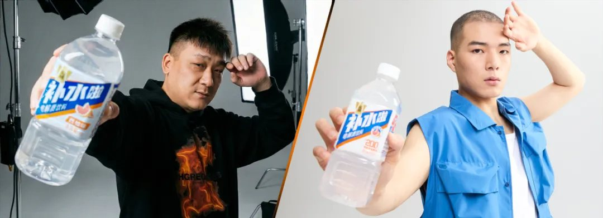
就像这个长 35 米、宽 8 米的换乘通道，我们在设计时，把它切成了 7 个不超过 4 . 6 米的独立画面，上面的每个字，最小都不能小于 28 厘米。这是因为，我们发现，字宽小于 28厘米就看不清了，画面长于 4 . 6 米，一眼就看不全。
所以，当你走完这条通道，相当于受到了 7 次“代言人+购买理由+产品”的完整进攻。脑子里就只剩一个念头，马上买瓶补水啦。
我们不仅在这一个地铁站成功打造出最佳样板，更把它精准复制到全国 44 个地铁站，彻底打赢地面渗透战，建立补水啦品牌认知！
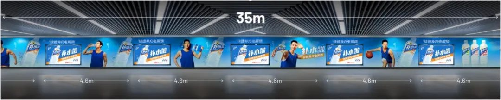
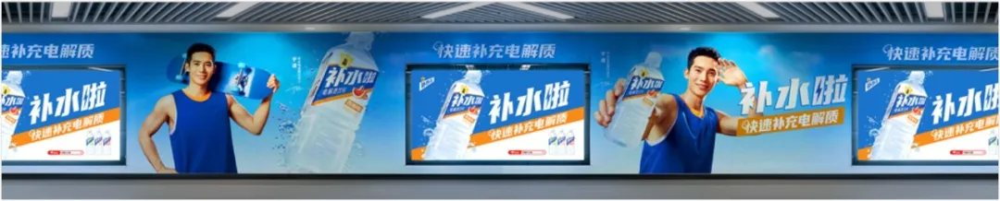
就是靠着这套笨功夫，沟通前 “预设计”，拍摄前“预拍摄”，拍摄中“预排版”，我们把“不可控的明星”，变成了最好的执行者，完美呈现想要的设计效果！华板说，成功不是做不平凡的事，而是把平凡的事做彻底，做到不平凡。成功不是不走寻常路，而是在寻常的路上付出不寻常的努力。7 年来，以华与华目的哲学为指导，从包装设计到广告创意，从平面拍摄到地铁包站，我们在每一个动作上下苦功，把每一个动作做彻底，所有动作始终服务于最终目的：卖货。亚里士多德说，目的因是事物存在的根本原因。对补水啦而言，包装的存在是为了被看见，广告的存在是为了被记住，地铁广告的存在是为了被购买。当我们把每一个环节的“目的”想清楚、做到极致，奇迹就会自然发生。从 40 亿到 155 亿的东鹏特饮，从 0 到 32 亿的补水啦——这不是风口上的奇迹，而是这 7年里每一天都“始终服务于最终目的”，下苦功，做细活的必然结果。
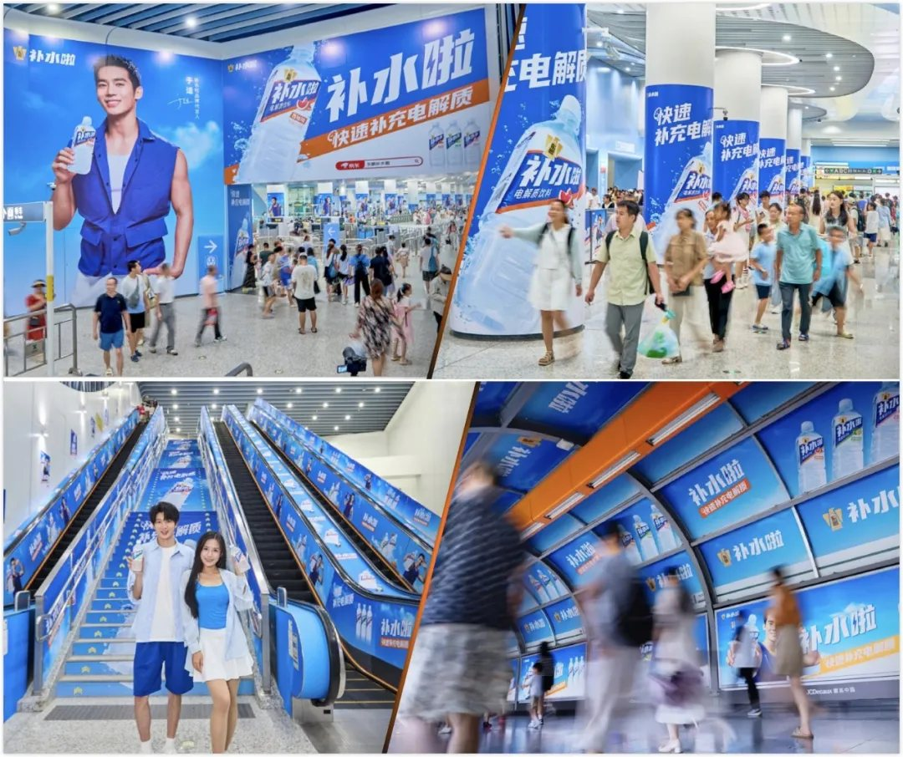